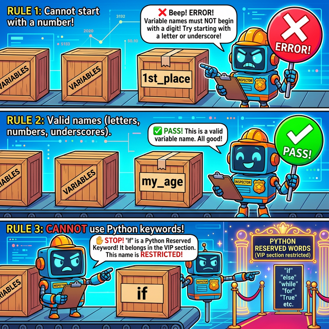
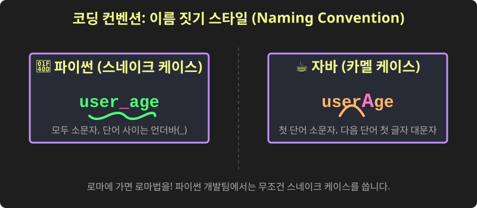
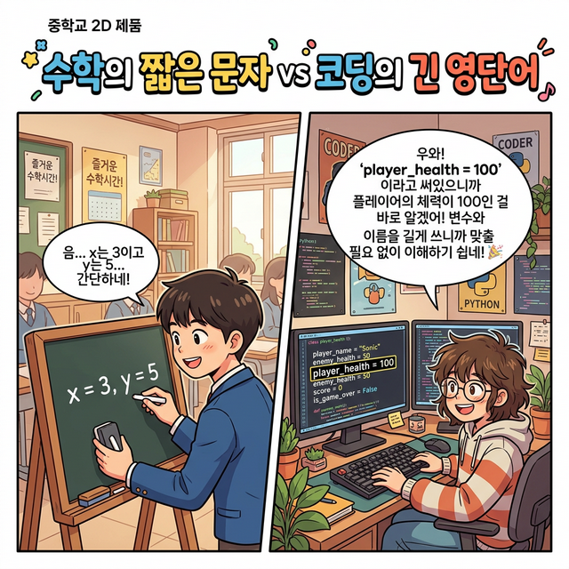
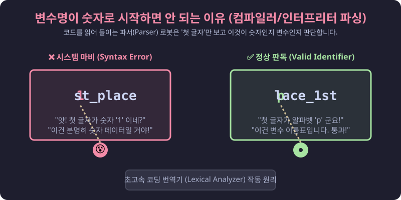

2주차 3세션: 다중 대입(Swap)과 메모리 라이프사이클 & PEP 8 작명 가이드 🧠
다중 대입과 값 교환 (Swap)
다중 대입(Multiple Assignment)의 기초
파이썬은 대입 연산자 = 하나를 사용하여 좌변의 여러 변수에 우변의 여러 값을 한꺼번에 대입하는 다중 대입 기능을 정식으로 지원합니다:
m, n = 10, 20
임시 변수(temp)를 이용한 전통적 Swap
Java나 C언어 등 타 언어에서는 두 변수의 값을 맞바꾸기(Swap) 위해, 한쪽의 값을 잠시 덜어두어 유실을 방지하는 임시 변수 temp가 필수적으로 개입해야 합니다:
temp = m
m = n
n = temp
비유하자면 우유 컵(a)과 콜라 컵(b)의 음료를 맞바꾸기 위해, 비어 있는 제3의 물 컵(temp)을 가져와 임시로 옮겨 담으며 교환하는 구조입니다. 이 방식은 불필요하게 코드 라인을 비대화하고 개발 가독성을 저해합니다.
파이썬의 우아한 한 줄 Swap (a, b = b, a) 원리
파이썬에서는 임시 컵 변수를 개발자가 선언하지 않고도 단 한 줄로 극도로 심플하게 두 변수의 연결을 교환할 수 있습니다:

(다이어그램: 임시 변수 상자 없이, 두 변수의 값이 X자 형태로 교차하며 한 번에 바뀌는 역동적인 과정을 보여줍니다.)m, n = n, m
이 한 줄이 실행될 때, 파이썬은 내부적으로 우측의 변수 묶음 n, m을 하나의 튜플(Tuple) 구조 데이터로 임시 자동 포장한 뒤, 이를 좌측 변수 묶음 m, n에 차례대로 순치적 할당하여 교환을 완성합니다.
튜플 패킹(Packing)과 언패킹(Unpacking)의 마법
- 패킹(Packing): 우변의
n, m처럼 나열된 여러 값들을 괄호가 없어도 파이썬이 자동으로 하나의튜플묶음으로 압축 결합하는 동작입니다. - 언패킹(Unpacking): 좌변의
m, n처럼 튜플 내부의 요소 개수만큼 변수를 좌측에 도열해 두면, 포장된 튜플 껍데기를 해제하여 위치에 맞춰 데이터를 순서대로 각각 바인딩해 주는 원리입니다.
바인딩과 메모리 라이프사이클
바인딩(Binding)의 동작 원리
파이썬에서 변수에 값을 넣는 행위는 객체에 이름표 밧줄을 매다는 네임 바인딩(Name Binding)입니다. 어떠한 객체에 매달린 밧줄의 개수를 추적하는 것이 바로 참조 카운팅(Reference Counting) 메커니즘입니다.
참조 카운팅(Reference Counting)과 가비지 컬렉터
CPython 가상 머신 내부의 가비지 컬렉션(GC)은 이 참조 카운터를 기반으로 실시간 구동됩니다.
- 변수가 재할당되거나
del지시어로 삭제되면, 객체 머리맡의ob_refcnt값이1씩 차감됩니다. - 카운터가 최종적으로
0이 되는 즉시, 가비지 컬렉터가 힙 메모리에서 해당 데이터 공간을 원천 해제(Free)합니다.
순환 참조(Circular Reference)의 맹점과 해결책
단순 참조 카운팅 방식에는 결정적인 약점이 존재합니다. 바로 서로가 서로를 가리켜 참조하는 순환 참조(Circular Reference) 상태입니다.
객체 A가 B를 가리키고, B가 A를 가리키고 있으면 이들을 가리키는 외부의 변수를 모두 del하여 없애도 내부 밧줄이 서로 묶여 있어 ob_refcnt가 절대 0으로 떨어지지 않는 메모리 누수가 터집니다.
이를 예방하고 정리하기 위해 파이썬은 참조 카운팅 외에, 백그라운드에서 메모리 힙의 고리들을 주기적으로 순회하며 끊어진 순환 구조를 통째로 걷어내는 세대별 가비지 컬렉션(Generational Garbage Collector) 알고리즘을 2차 보완책으로 상시 운용하고 있습니다.
Java vs Python 비교
Java Primitive Stack Slot vs Python Heap Reference
- Java: 스택 메모리 세그먼트에 고정 크기(예: int의 경우 4byte)를 박아두고, 자료형이 한 번 고정되면 타입을 절대로 바꿀 수 없는 경직된 물리적 메모리 슬롯 할당을 수행합니다.

(자바의 기본 타입은 4byte 짜리 철저한 물리적 상자를 만들어 값을 쑤셔 넣지만, 파이썬은 변수라는 이름표(포인터 화살표)를 허공에 둥둥 떠 있는 객체에 밧줄처럼 연결합니다.)- Python: 기본형이 아예 없어 모든 데이터가 힙(Heap) 공간에 대형
PyObject로 뜨고, 변수는 단지 8바이트 크기의 주소 링크를 복제해 나르는 포인터 참조자로 움직입니다.
다중 대입과 Swap 방식 비교
- Java: 문법적 다중 대입을 공식적으로 지원하지 않아 무조건 한 변수씩 순차 대입해야 하며, 값 교환 시 물리 스택 영역의 원시 데이터를 담기 위한
temp임시 로컬 변수 할당문 작성이 강제됩니다. - Python: 튜플 언패킹을 통해 임시 포인터 처리를 내부화하여, 변수가 스왑할 때 물리적으로 중간 temp 변수를 노출하지 않는 고도의 세련된 단일 구문 스왑을 지원합니다.
변수 작명 규칙과 PEP 8 가이드라인
식별자 명명 규칙과 예약어(Keywords)
파이썬에서 변수, 함수, 클래스 등의 고유 식별자 이름을 지을 때는 반드시 문법적 오류를 내는 조건들을 회피해야 합니다:

(웹툰 비유: 깐깐한 파이썬 로봇 검사관이 변수 이름 상자들을 검사합니다. 숫자로 시작하거나 내부 예약 명령어를 이름으로 쓰면 가차 없이 SyntaxError 도장을 찍습니다.)- 알파벳 대소문자, 숫자, 밑줄(
_)의 조합만 허용합니다. (특수문자와 공백은 절대 불가) - 첫 글자에 숫자를 기재해서는 안 됩니다.
- 이미 시스템 문법용으로 독점 사용 중인 예약어(Keywords)(예:
if,for,class,True,def등)는 변수 이름으로 삼을 수 없는 법률입니다.
PEP 8 코딩 컨벤션의 변수 작명 규칙 (snake_case vs CamelCase)
가독성 높은 협업 환경을 구축하기 위해 파이썬은 공식 스타일 가이드인 PEP 8을 준수할 것을 적극 권장합니다.
📖 상세 가이드: 네이밍 규칙, 들여쓰기, 공백 및 임포트 작성 원칙 등 PEP 8에 대한 전체 상세 규칙은 파이썬 스타일 가이드: PEP 8 핵심 정리 문서를 참고하세요.

(다이어그램: 코딩 컨벤션의 차이를 보여줍니다. 뱀처럼 언더바로 이어가는 파이썬과 낙타 등처럼 대문자로 솟아오르는 자바의 스타일 차이를 확인하세요.)명명 유형별 규칙은 다음과 같습니다:
- snake_case: 변수명, 함수명에 사용하며 모든 글자를 영문 소문자로 적고 단어 사이를 밑줄(
_)로 연결합니다. (예:user_profile_name) - PascalCase (UpperCamelCase): 클래스명에 사용하며 단어의 첫 글자마다 대문자로 시작하고 결합합니다. (예:
DataModelProcessor) - UPPER_SNAKE_CASE: 상수(Constant) 성격의 변수에 사용하며 모두 대문자로 적고 밑줄로 이어서 값이 바뀌지 않을 데이터임을 알립니다. (예:
MAX_PIXEL_LIMIT)
의미 있는 작명과 boolean 접두사(is_, has_) 규칙
변수의 명칭은 $x, y$처럼 한 글자로 짓는 무의미한 작명을 탈피하고, 이름만 보아도 해당 상자 안에 어떤 데이터가 담겨 있는지 목적을 유추하기 쉽도록 묘사성이 뛰어난 작명을 수행해야 합니다:

(웹툰 비유: 수학책에서는 식별할 데이터가 한두 개뿐이라 $x, y, z$ 로 충분했지만, 수십만 줄의 코드를 다루는 프로그래머에게 $x=100$은 도무지 알 수 없는 암호입니다. 대신player_health = 100 이라고 길게 적어두면 누구나 체력 게이지임을 단번에 알아차릴 수 있습니다.)
특히 참/거짓(Boolean)을 담는 변수의 경우에는 is_ 또는 has_ 등의 접두사를 의도적으로 덧붙여 선언하면 코드를 읽는 동료가 조건 검사용 불리언 변수임을 즉석에서 직관화하여 알 수 있습니다. (예: is_active, has_permission)
💡 (CS TMI) 왜 변수명은 숫자로 시작할 수 없을까?
파이썬 번역기(인터프리터) 내부에서 우리가 작성한 소스 텍스트를 가장 먼저 훑어내는 핵심 파트가 바로 어휘 분석기(Lexer)와 구문 분석기(Parser) 로봇입니다. 이 로봇은 번역 효율성을 위해 코드 상의 토큰 첫 글자 하나만 째려보고(Lookahead) 데이터의 대분류를 즉각 판정해 스코프 창고를 나누는 방식으로 설계되었습니다:

(다이어그램: 번역기 로봇이 텍스트의 첫 글자를 스캔합니다. 첫 글자가 ‘알파벳’이면 “아, 얘는 이름표(변수)구나!” 하고 변수 창고로 보내고, 첫 글자가 ‘숫자’이면 “아, 얘는 데이터 값(정수/실수)이구나!” 하고 계산기 창고로 보냅니다.)만일 변수명을 1st_place 처럼 숫자로 시작하게 승인하면, Lexer는 첫 글자 1을 보자마자 숫자 리터럴 연산으로 간주하여 계산기 메모리 레지스터를 대기시킵니다. 그러나 바로 뒤이어 st_place라는 정체불명의 문자가 스캔되는 구조적 모순이 터지면서 번역 로봇은 심각한 해독 불가 마비(SyntaxError)에 도달합니다. 이를 방지하고 초고속 스캔 처리를 지원하기 위해, 전 세계 거의 모든 고급 프로그래밍 언어들은 “변수명의 첫 시작은 절대로 숫자가 될 수 없다”는 대원칙을 고수하게 되었습니다.
3세션 마무리
3세션 코딩 영단어
Unpacking: 언패킹, 압축 해제. (튜플이나 리스트처럼 포장되어 묶여 있는 여러 데이터를 각각 쪼개어 개별 변수에 일괄 할당하는 동작입니다.)Reference: 참조, 지목. (실제 데이터의 실체가 있는 메모리 주소값 링크 그 자체를 지칭하는 정보입니다.)Convention: 관례, 규약. (스타일 가이드처럼 가독성 증대를 위해 여러 사람 간에 맺어진 문법 외적인 작성 수칙 약속입니다.)
3세션 Vibe Coding
🗣️ 학생 프롬프트 (AI에게 이렇게 명령해 보세요): “파이썬에서 여러 변수에 하나의 동일한 값을 일괄적으로 한 번에 대입해 두는
a = b = c = 0과 같은 연쇄 대입(Chained Assignment)의 동작 메커니즘과, 이를 가변 객체(Mutable list 등)에 적용했을 때 발생하는 참조 오염 부작용 위험을 예제를 들어서 쉽게 리뷰해 줘.”